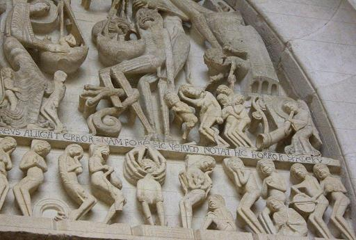

Gwerz an Anaon
Complainte des Trépassés
Lament of the Departed
Texte recueilli à Noyal-Pontivy par l'Abbé François Cadic
Publié dans "La Paroisse Bretonne" (Novembre 1899)et par le Chanoine Pérennès dans "Hymnes de la Fête des Morts en Basse-Bretagne" ("Annales de Bretagne", 1924, volume 36-1

Mélodie
"Gwerz an anaon" (Parrez Breizh e Pariz)
Notée par M. Sylvio Lazzari (1857-1944), professeur à la Schola cantorum
Arrangement Christian Souchon (c) 2012
Source: "La Paroisse Bretonne de Paris", novembre 1899
|
BRETON (Version KLT) GWERZ AN ANAON 1. Honan zo an noz presiuz, Deut eus an neñv, deut gant Jezuz. Jezuz en-deus hon davelet D'ho tihuneiñ mar d'oc'h kousket. 2. D'ho tihun war ho c'hun kentañ Da bediñ Doue gant an anaon Zo aet d'o hent eus ar bed-mañ Pell-zo o c'hortoz an noz-mañ. 3. Ha mar d'oc'h klañv hag aflijet, Savit diouzh penn ho korled, Savit diouzh penn ho kwele: Larit ur Bater evite. 4. Ho tad, ho mamm, ho preur, ho c'hoar, Mar d'int en tan er Purgador. Ar Purgator zo don en douar, Tost d'an Ivern leun a glac'har. 5. Emaint eno war ho genoù. Krial a reont forzh pedennoù. Tan zo d'an neñv tan dindane, Tan zo war bep kostez dezhe. 6. Emaint en ur basefos du An tan en alum a bep tu En dommder vras, en anoued Hep tamm koñsolasion e-bed. 7. An tan-se a zo ken ardant Ma loskefe en ur momant An douar, ar mor, ar vaen, an houarn, Kenneve Doue her mir, her gouarn. 8. Piv ac'hanomp a c'hellfe Padout ur momant er c'hwrez-se? Int a zo oblijet da chom Marze mil vloaz, heb arsav lomm. 9. Red zo paeañ er Purgator Beteg an nevesañ diner. Eno emaint holl rañjenet Ken e vo an dale paeet. 10. Rag ne d'a, sur, ene erbed D'ar baradouz hep bed purjet. Red eo bet kaer evel arc'hant Vid kavoud lec'h er firmamant. 11. Eno e vo klevet ar c'hri Forzh da Jezuz, forzh da Vari: "Itron Vari, hor sikourit! Ho-pezet truhez, hor mignoned! 12. Itron Varia ar Garmez Sikourit hon, avokadez, Itron Vari a Grenenan, Dilivrit-ni a-greiz an tan! 13. En devalenn a Jozafat Vo diforc'het 'n drouk d'oc'h ar mat, Eno ema ar balañsoù. Kelvez d'an hini a ray gaoù. 14. Ha Sant Mikael, gant e bouezoù, A bouezo an drouk d'oc'h ar gaoù. Balañs d'hen gas e zivalo Plafon an ivern hi kouezho. 15. Brasañ poanioù a zo er bed A zo er lec'h-se dastumet. Hañval mad int d'an tourmantoù Ar re daonet o eneoù. 16. Ha c'hwi hellfe klevoud hep kin An dra ken terrupl heb krenañ A-benn ar fin eus ho puhez, Mar deuit ivez d'ar poanioù-se? 17. Bugale hag heritourien Ne zihanter ket ho kalon: Marteze emaint en tan flamm Ho kerent, ho tad pe ho mamm! 18. Ha c'hwi hellfe gober chervat Ha boud ho tud en ur gwall stad, E-lec'h n'hellan d'en em sikour Nemed drezoc'h o holl sikour? 19. N'ho-peus truhez mard'int en tan Ha c'hwi o vragal er vro-mañ. Mar grit-chwi berzh gant ho madoù, Int zo gronnet gant tourmañchoù. 20. Pinvidig oc'h gant o danne Ha kousket oc'h en o gwele. [3] Int a zo paour er basefos Jamez n'hellan kemer repoz. 21. Evit gounit d'eoc'h-chwi madoù Marteze o-deus bet graet gaou. Int o-deus bet graet pec'hedoù Zo kaos bremañ d'o foanioù. 22. Int o-deus kement ho karet Gwall buhan peuz int ankounaet. Poan-vras c'hoaz ur wech en deiz Larit ur Bater evite! 23. Etrezoc'h, tud karantezuz Pedit aliez ho tous Jezuz Da rein dezhe peoc'h eternel Hag ar sklaerder perpetuel! Transcrit par Christian Souchon |
FRANCAIS LA COMPLAINTE DES TREPASSES 1. Cette nuit, qu'elle est précieuse, [1] Venue du ciel, mystérieuse! C'est Jésus qui nous ordonne De réveiller ceux qui dorment. 2. Quittez votre premier somme Et priez Dieu pour ces hommes Qui, partis vers d'autres sphères Depuis bien longtemps l'espèrent. 3. Et, même malade ou triste, Qu'hors du drap la tête on hisse Et dise dans un murmure Un Pater pour ceux qui furent. 4. Vos frère et soeur, père et mère Brûlent, au fond de la terre, Dans le feu du purgatoire, Près de l'enfer, doit-on croire. [2] 5. Ils prient face contre terre Et s'évertuent en prières: Feu sous leurs pieds, sur leurs têtes, Partout le feu qui les guette. 6. Une noire basse-fosse Qu'éclaire ce feu féroce Où c'est sans répit qu'ils passent De la fournaise à la glace. 7. L'ardeur de ce feu qui gronde Consumerait ce bas-monde, Terres et mers qui débordent Si Dieu n'y mettait bon ordre. 8. Un instant qu'à Dieu ne plaise Que je sois dans la fournaise: Eux, c'est mille ans de détresse Qu'ils ont à souffrir sans cesse. 9. Car il faut payer ses dettes, Et que pas un liard ne reste: Le séjour au purgatoire Pour tous est obligatoire. 10. Et nulle âme au ciel ne monte Encore entachée de honte: Seuls ceux dont brille la face Au firmament ont leur place. 11. C'est pourquoi ce cri s'élève: "Priez la Vierge, sans trêve! Pitié: notre peine est telle. Il n'est de secours sans elle. 12. Délivrez-nous, Notre-Dame De Crénénan, de ces flammes! [4] Vierge de Carmès sur terre, [5] Vous fûtes notre auxiliaire! 13. Quand sonnera dans la plaine De Josaphat l'heure blême, Nos actions seront jugées Et nos ruses déjouées. 14. Saint Michel tient la balance: Que le juste au ciel s'élance! Quant au mal et à la haine, Qu'ils aillent à la géhenne! 15. C'est là que les pires peines Forment une longue chaîne Semblable à ce que subissent Les damnés dans leur abysse. 16. Peut-on ouïr cela sans cesse Sans être pris de détresse Jusqu'à la fin de sa vie: Subir la peine infinie! 17. Ne sentez-vous, à l'entendre, Vous leurs héritiers, se fendre Vos coeurs: vos parents, vos pères Livrés aux flammes... Vos mères! 18. Peut-on faire bonne chère Quand on sait dans la misère Les siens, que le seul remède A tous leurs maux, c'est notre aide? 19. Pitié pour eux dans les flammes! Ici-bas tu te pavanes Et gaspilles ta richesse Quand leurs tourments n'ont de cesse. 20. De leurs biens vous êtes riches, Et leur lit c'est votre niche! [3] Mais eux, dans la basse-fosse, Jamais ils ne se reposent. 21. Eux qui pour vous amassèrent Des biens, parfois, qu'ils volèrent, S'ils commirent bien des fautes, Leurs péchés ce sont les vôtres. 22. Leur amour fut sans limite. Mais vous l'oubliez bien vite: Par jour ne disant à peine Qu'un Pater pour qui vous aime. 23. Vous qu'un tendre amour anime C'est là le recours ultime: Qu'à jamais Jésus leur fasse De sa paix l'immense grâce! [6] Traduction Christian Souchon (c) 2012 |
ENGLISH LAMENT OF THE DEPARTED 1. This is a precious and soft night: [1] Jesus was moved by the sad plight Of the departed and made us Awake you from bed and recess; 2. Awake you all from your sound sleep And pray to God for those who weep, From down below far, with fright numb, Long in wait for this night to come. 3. If you lie sick or sad in bed, From under your sheet raise your head, Sit up on your bed, thereafter! Pray for them a "Pater Noster"! 4. To your kith and kin a good turn, In Purgatory's fire who burn. In Purgatory below ground, Near Hell, in pains all the year round. [2] 5. They turn to the ground their faces Screaming their prayers in spaces That fills a consuming, hot tide, Above, beneath, on either side. 6. The dungeon that keeps them is dark Though everywhere blaze, reek and spark Alternate stifling heat and chill. Give them relief never they will! 7. This blazing fire is ferocious: It would burn in no time's notice. The earth, the sea, iron and stone But for God Who sees that they don't. 8. Who of you would, but for a while Stand all these pains put to a pile? They must, and for a thousand years, In spite of their cries or their tears. 9. Here they have to pay off their debt Not a penny should they forget. Therefore they are all put in chains Till they have had enough of pains. 10. For no one goes, that's sure enough, To paradise if he's a scruff. Like gold or silver you should glare If you want to find your way there. 11. There you will hear deafening cries To Jesus and Mary arise: "O Virgin Mary, help!" they yell. "Our friends on earth, your help as well! 12. Virgin of Crénénan, you may [4] Keep the devouring fire at bay. Virgin of Carmès, succour us! [5] You are in defence our witness. 13. In the valley of Josaphat Where good and evil are sorted, There will be large scales to weigh them And our treacheries to condemn. 14. Saint Michael will wield scales and weights: Fairly he shall decide our fates: Either up to Heavens you go, Or else you fall to Hell below. 15. The direst pains you may think of, The torments here are far above. For they are to those much akin The damned suffer for their sin. 16. Now, without flinching would you thole, As long as life's filling your bowl, To hear of their pains and be numb Knowing that your turn once shall come? 17. Children and heirs, don't your hearts ache? Say, don't your hearts at the thought break That those whose torments are so dire May be your mother or your sire? 18. How could you accept to eat well While they all are nearly in Hell. No one on earth but you from there May release them with their prayer? 19. Won't you pity them in the flame, While you just strut about in vain, Wasting your riches with both hands, Ignoring what honour demands? 20. With alien goods you are wealthy: You sleep in their beds right snugly. [3] They vegetate in a dungeon Their pains continue on and on. 21. Earthly wealth for your sake they gained Maybe they stole, earning their pain, Since the sins they have committed With punishment were requited. 22. Those who have loved you that much Would you leave them now in the lurch Hardly saying a prayer daily For them who loved you so dearly? 23. Together now, folks of great love, Pray often to the Lord above That He may bestow on them peace And felicity that won't cease. [6] Translation: Christian Souchon (c) 2012 |
NOTES:
|
[1] "Le jour de la Fête des Morts (2 novembre), lorsqu'on se mettait au lit, on entendait à la porte retentir des chants funèbres, ceux des trépassés qui empruntaient la voix des pauvres de la paroisse demandant des prières pour les défunts et des aumônes pour eux-mêmes." (Cf. Chant des Trépassés du "Barzhaz Breizh"). Une partie du produit de la collecte servait à faire dire une messe des morts. Comme l'indique l'Abbé Cadic, le coutume était encore observée en 1899, particulièrement dans la région de Noyal-Pontivy (où l'on parlait vannetais). Mais elle était combattue par le clergé local en raison des abus auxquels elle donnait lieu. En 1924, le chanoine Pérennès parle de cette coutume au passé. A propos des fameux abus il écrit: "Si d'aventure le chef de famille ne donnait rien...il s'entendait décocher, en guise d'actions de grâces, cette imprécation bien bretonne: Etre ho kein hag ho roched, Etre ho roched hag ho kein, Ra vezo laou kement a mein! |
Que Dieu vous couvre de vermine Entre le dos et la chemise, De la tête jusqu'aux mollets: Des poux comme s'il en pleuvait! |
[2] L'une des versions de ce chant publiée par le chanoine Pérennès comprend un couplet dont il ressort que la croyance au purgatoire est un article de la foi:
|
II. Hor mamm Iliz hag ar Skritur A ra deomp krediñ a dra sur Ez eus ur purgator er bed Vit ober penijenn peurvat. |
II. Car l'Eglise et les Ecritures L'affirment, la chose est donc sûre: Le purgatoire nous attend Pour qu'on soit parfait pénitent. |
Ces effroyables notions sont visées aux articles 1030 et ss. du Catéchisme de l'Eglise catholique (1992) et restent toujours valables. Elles furent formulées par le concile de (1439-1445) et le concile de Trente (1542-1563) mais leur origine est bien plus ancienne (cf. Yannik Scolan).
[3] C'est ce qu'on lit chez le chanoine Pérennès. Chez l'Abbé Cadic, cela devient "Pinhuid-mad oh get hou tanné/ Ha kousket oh in hou cuile" (De vos biens vous êtes riches/ Et votre lit c'est votre niche).
[4] Notre-Dame de Crénénan en Plouerdut, non loin de Guéméné.
[5] Notre-Dame de Carmès à Neuliac, près de Pontivy.
[6] En novembre 1900, la Paroisse Bretonne de Paris publiait une autre mélodie, recueillie à Melrand, par l'Abbé Couturaud, chantre à la cathédrale de Vannes. Elle accompagne des variantes des strophes 1, 2 et 4 ci-dessus et une stophe supplémentaire notée à Neuillac près de Pontivy, où il est dit que cette nuit est arrivée:
"Pour délivrer de leurs peines/Un nombre d'âmes considérable.
Eit delivrein a boénieu/ Un nombr bras a ineaneu."
Part of the proceeds from the collection was given for a funeral service. As stated by the Reverend Cadic the custom was still alive in 1899, especially around the town Noyal-Pontivy (in the Vannes dialect speeking area), but was combated by most vicars because it was often misused.
In 1924 Canon Pérennès refers to the custom in the past tense. Concerning the alleged abuses, he writes:
"Should the master of the house have refused alms... this imprecation used to be sung by the night collectors, as a reward for his niggardliness:
Etre ho kein hag ho roched,
Etre ho roched hag ho kein,
Ra vezo laou kement a mein!
Between your back and your clothing,
Between your clothing and your back,
Teeming with vermin, quite a pack!
[2] One of the versions of this song published by Canon Pérennès includes a stanza to the effect that belief in Purgatory is an article of faith:
|
II. Hor mamm Iliz hag ar Skritur A ra deomp krediñ a dra sur Ez eus ur purgator er bed Vit ober penijenn peurvat. |
II. Our mother Church and the Scripture Imposes we believe for sure That there is a purgatory Where we may repent perfectly. |
These fearsome notions, addressed in articles 1030 and ff of the Catechism of the Catholic Church (1992), are still valid. They were set out by the Council of Florence (1439-1445) and the Council of Trent (1542-1563) but may be traced back much earlier (see Yannik Scolan).
[3] Unlike Canon Pérennès'version, the Reverend Cadic's version has "Pinhuid-mad oh get hou tanné/ Ha kousket oh in hou cuile" (With your own goods you are wealthy/ And you sleep in your beds snugly).
[4] Notre-Dame de Crénénan near Plouerdut, not far from Guéméné.
[5] Notre-Dame de Carmès at Neuliac, near Pontivy.
[6] In November 1900, the "Paroisse Bretonne de Paris" published another tune, collected at Melrand by the Reverend Couturaud, cantor at Vannes Cathedral. It is sung to accompany variants of stanzas 1, 2 et 4 above and an additional stanza recorded at Neuillac near Pontivy, stating that this night dawned:
"To relieve from their pains/A large number of souls.
Eit delivrein a boénieu/ Un nombr bras a ineaneu."
Retour à "Gwerz an Anaon" du Barzhaz
Taolenn